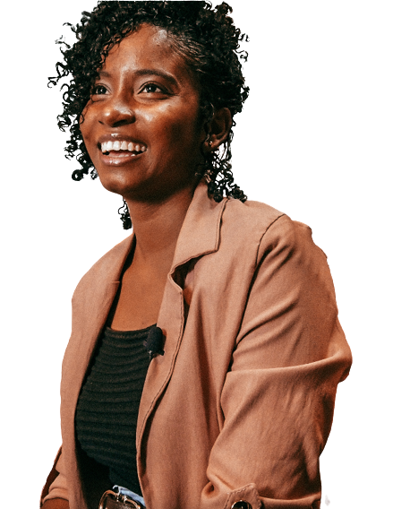

Andressa Borges
Desenvolvedora Front-end
Desenvolvedora Full Stack com especialidade em Front-end, pesquisadora em Acessibilidade na Web e entusiasta em Machine Learning e Dados. Criadora do @codigo.consciente, um projeto para pessoas programadoras que se importam com seus códigos, graduanda em Análise e Desenvolvimento de Sistemas e licencianda em Matemática. Coordenadora do @programada.io e colaboradora em comunidades que buscam aproximar e manter mulheres na tecnologia e promover diversidade e inclusão de pessoas pretas no mercado. Escreve sobre carreira em TI no LinkedIn para ajudar iniciantes em programação.